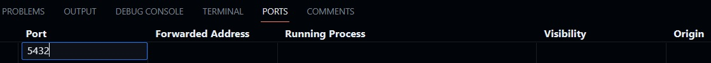
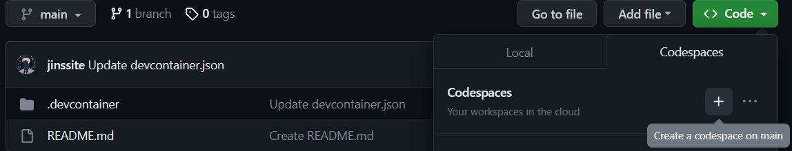
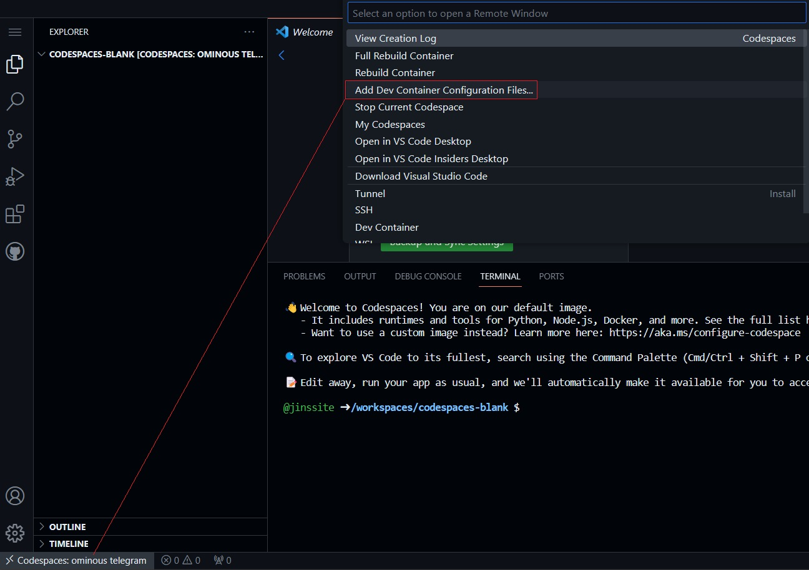
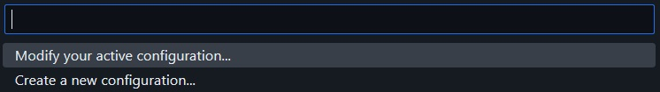
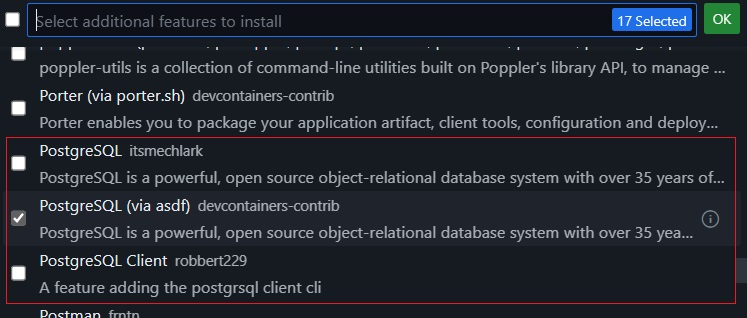
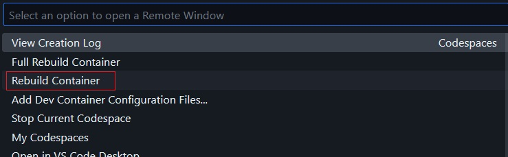

Add PostgreSQL to Codespace
GitHub codespace is a development environment that is hosted in the cloud and accessible remotely, directly from a web browser. There is no longer a need to set up your own complex local environment. It is easy to use prebuilt templates to build codespaces and to quickly start new projects from codespaces. However, the prebuilt codespace may be lack of some packages that you may need for the projects. One example is the prebuilt Blank template, which includes many tools but not PostgreSQL, a popular relational database management system (RDBMS) used in many projects. In this article we will show you three methods to add PostgreSQL into the codespace. The similar procedure can be used to add other packages to codespace also.
Install PostgreSQL Directly to Codespace
First, from Your Codespaces, use Blank template to build a codespace. This builds an Ubuntu 20.04 environment with runtimes and tools like Python, Node.js and Docker. To install PostgreSQL to the system, you can
$ sudo apt-get update
$ sudo apt-get install postgresqlThe first command updates the package list. This ensures that the latest installation package is used. The second command installs the PostgreSQL package from Ubuntu default repository, which is PostgreSQL version 12. If this is not the version you want, you can use the PostgreSQL Apt Repository to install other versions.
To start the PostgreSQL server from the directory, those familiar with Linux may expect to use command "systemctl start postgresql" to start the service managed by systemd. However, systemd has overhead and is generally not run in the Docker container used by the codespace. Instead, we start the server from the service command
$ sudo service postgresql startBy default, PostgreSQL client connects to the server using port 5432. Click PORTS tab and Forward a Port
After all these have been done, we can use PostgreSQL client porgram psql to connect to the server. By default, PostgreSQL uses peer authentication for local connection. It uses the client's operating system user name as the allowed database user name. The database username from the installation is postgres. So we have to use postgres user account (already created from the installation) to run psql:
$ sudo su - postgres
$ psql
postgres=# select version();
version
----------------------------------------------------------------------------------------------------------------------------------------
PostgreSQL 12.16 (Ubuntu 12.16-0ubuntu0.20.04.1) on x86_64-pc-linux-gnu, compiled by gcc (Ubuntu 9.4.0-1ubuntu1~20.04.1) 9.4.0, 64-bit
(1 row)
postgres=# show data_directory;
data_directory
-----------------------------
/var/lib/postgresql/12/main
(1 row)
postgres=# \db+
List of tablespaces
Name | Owner | Location | Access privileges | Options | Size | Description
------------+----------+----------+-------------------+---------+--------+-------------
pg_default | postgres | | | | 23 MB |
pg_global | postgres | | | | 623 kB |
(2 rows)
postgres=# \l
List of databases
Name | Owner | Encoding | Collate | Ctype | Access privileges
-----------+----------+----------+---------+---------+-----------------------
postgres | postgres | UTF8 | C.UTF-8 | C.UTF-8 |
template0 | postgres | UTF8 | C.UTF-8 | C.UTF-8 | =c/postgres +
| | | | | postgres=CTc/postgres
template1 | postgres | UTF8 | C.UTF-8 | C.UTF-8 | =c/postgres +
| | | | | postgres=CTc/postgres
(3 rows)
We checked the PostgreSQL version, database cluster directory, default tablespaces and databases created from the installation. All look good.
If you need to use a user other than postgres to access the database, you can modify the file pg_hba.conf or pg_ident.conf to change the authentication roles or user mappings. Both files are at /etc/postgresql/12/main directory.
The database cluster is at subdirectory 12/main under postgres user home (/var/lib/postgresql). From here, you can use it for your application or, if you prefer to build your own database cluster, check out our next article.
Build A New Template That Includes PostgreSQL
Above method could be OK if we only build codespace once. However, if we need such codespace multiple times for different projects, it would be tedious to repeat this kind of work every time. A better solution is creating a new template with PostgreSQL included.
We need two configuration files for the template:
- .devcontainer/Dockerfile
- .devcontainer/devcontainer.json

Here we name the repository as codespaces-blank-postgresql, an indication that it is from prebuilt Blank template and includes PostgreSQL.
The GitHub codespace is based on the Microsoft VSCode product and uses a Docker container as the development environment. The container is created based on configuration defined in the devcontainer.json file. And the Dockerfile specifies how to build the Docker container.
Let's have a look of both files.
Dockerfile
1 FROM mcr.microsoft.com/devcontainers/universal:2
2
3 RUN apt-get update && export DEBIAN_FRONTEND=noninteractive \
4 && apt-get -y install --no-install-recommends postgresqlThe first line uses FROM command to select prebuilt Blank template image as the base image for our template. The third line runs the similar apt-get command as in the first method to install PostgreSQL. If you need more packages, you can add them into the installation list as well.
This is a simple Dockerfile. For more detail on the file format, refer to Dockerfile reference.
devcontainer.json
1 {
2 "name": "ubuntu-postgresql",
3 "build": {
4 "dockerfile": "Dockerfile"
5 },
6 "forwardPorts": [5432],
7 "postStartCommand": "sudo service postgresql start"
8 }The "dockerfile" defines the path of the Dockerfile relative to devcontainer.json. The Dockerfile is used to build the Docker container. We use "forwardPorts" to forward port 5432 that is used by the client-server communication and "postStartCommand" to start the PostgreSQL server. With this configuration we do not need to manually set them up as in the first method. For detail of devcontainer.json file, refer to dev container specification document.
Once the two files are created, from repository, click on Code and then "+" sign and select Create a codespace on main.
This will start to create the codespace. After a while when the codespace is created, from terminal window, switch to postgres user and run psql. You can see it is exactly same as what we have from the first method.
Install PostgreSQL from Development Container Features
Instead of using apt-get, we can use Development Container Features to add more tools, runtimes and libraries into our development container. From our Blank codespace, to see the feature list, click lower-left codespaces button and select Add Dev Container Configuration Files...
Select Modify your active configuration...
Scroll the list to find features with PostgreSQL. As an example, we select PostgreSQL (via asdf) and then click the green OK button
Here is how the devcontainer.json file looks like after adding the feature:
{
"image": "mcr.microsoft.com/devcontainers/universal:2",
"features": {
"ghcr.io/devcontainers-contrib/features/postgres-asdf:1": {}
},
"forwardPorts": [5432],
"postStartCommand": "sudo su - codespace -c \"~/.asdf/shims/pg_ctl start\""
}The feature postgres-asdf has been added. We also add "forwardPorts" to forward the port 5432 and "postStartCommand" to start the PostgreSQL server. It will install PostgreSQL version 16, which provides a command, pg_ctl, to start the server.
Click lower-left Codespaces button again and select Rebuild Container
Once the codespace is up and running, use psql command to check the database:
$ psql -d postgres -U postgres
postgres=# select version();
version
-------------------------------------------------------------------------------------------------------
PostgreSQL 16.1 on x86_64-pc-linux-gnu, compiled by gcc (Ubuntu 9.4.0-1ubuntu1~20.04.2) 9.4.0, 64-bit
(1 row)
postgres=# show data_directory;
data_directory
---------------------------------------------------
/home/codespace/.asdf/installs/postgres/16.1/data
(1 row)
postgres=# \db+
List of tablespaces
Name | Owner | Location | Access privileges | Options | Size | Description
------------+----------+----------+-------------------+---------+--------+-------------
pg_default | postgres | | | | 22 MB |
pg_global | postgres | | | | 565 kB |
(2 rows)
postgres=# \l
List of databases
Name | Owner | Encoding | Locale Provider | Collate | Ctype | ICU Locale | ICU Rules | Access privileges
-----------+----------+-----------+-----------------+---------+-------+------------+-----------+-----------------------
postgres | postgres | SQL_ASCII | libc | C | C | | |
template0 | postgres | SQL_ASCII | libc | C | C | | | =c/postgres +
| | | | | | | | postgres=CTc/postgres
template1 | postgres | SQL_ASCII | libc | C | C | | | =c/postgres +
| | | | | | | | postgres=CTc/postgres
(3 rows)The PostgreSQL package is installed in .asdf subdirectory under the user home (in our case, /home/codespace). The database cluster directory is at ~/.asdf/installs/postgres/16.1/data. You can move this directory to other location and use PGDATA environment or -D option to point to the new location. You can also follow our next article to build your own database cluster for your applications.